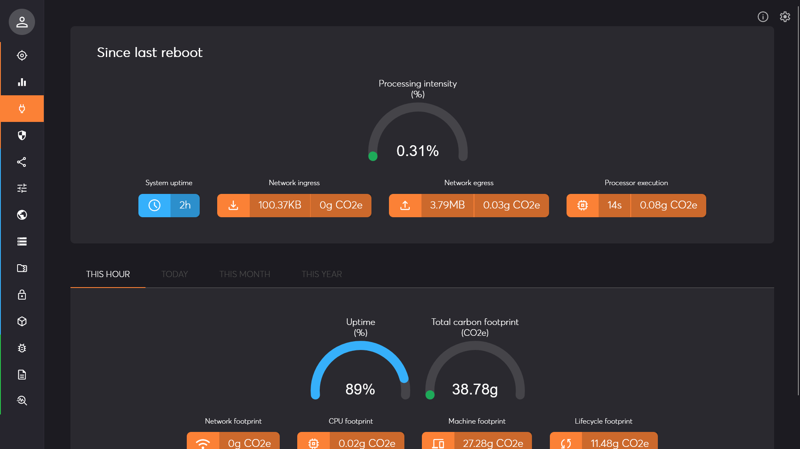
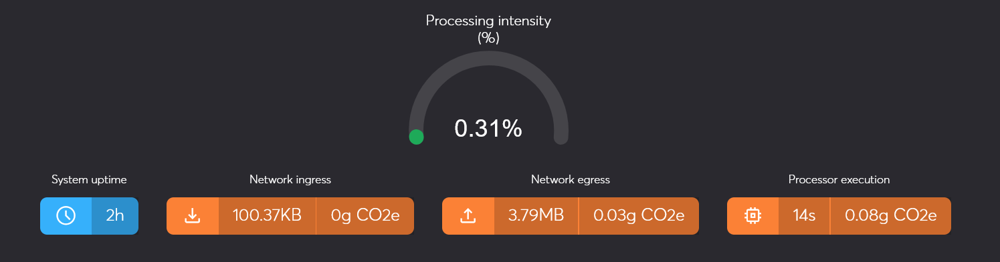
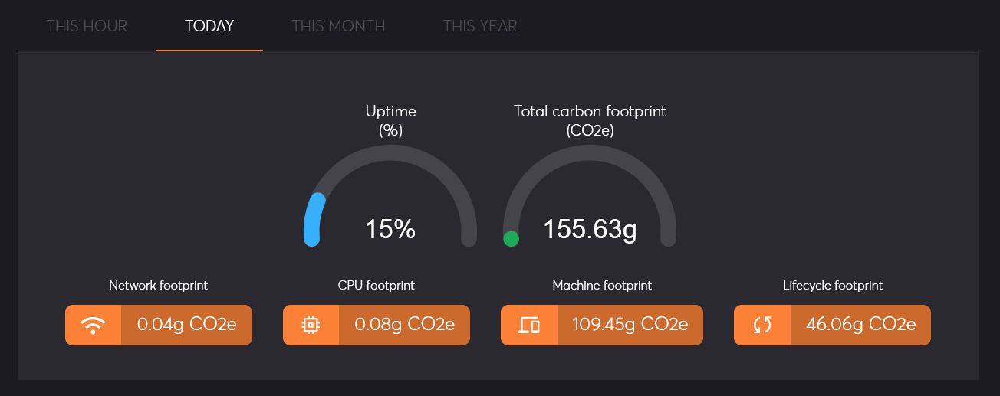
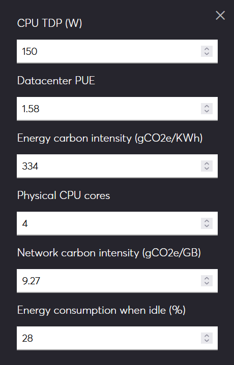

Management Interface Page: Carbon Footprint
Description
This page displays carbon footprint indicators from the system. These indicators can be used in the scope of EU CSRD reporting or your own CSR and ESG policies.

Since last reboot
The top section of the page shows accumulated metrics since last reboot of the solution:
- Processing intensity: this is the ratio between the active CPU time and the total response time of tasks. It gives an idea of the latency and how intensively the system is used. A higher value means that tasks need more processing power. A lower value means that the task itself did not consume much resources compared to i.e. network transmission.
- System uptime: the duration of the system uptime since last reboot. This can tell you if the system has been restarted recently or not.
- Network ingress: this is the total number of bytes received from the network since last reboot. It can give you hints about the amount of incoming data.
- Network egress: this is the total number of bytes sent on the network since last reboot. It can give you hints about the amount of outgoing data.
- Processor execution: this is the rounded total active CPU utilization of the entire system since last reboot.

Aggregated carbon footprint
The bottom section of the page presents 4 tabs with aggregated carbon footprint values for this hour, today, this month, and this year. The values presented include some Scope 1, Scope 2, and Scope 3 emissions based on latest scientific reports, available lifecycle assessments, and other governmental studies and sources. The computations are preserved across system reboot and account for offline time.
- Uptime: this gauge shows the proportion of time that the system has been running for the represented period.
- Total carbon footprint: the sum of all 4 indicators below. The value is represented as a gauge that represents the theoritical carbon emission when the system is at full capacity.
- Network footprint: this is the computed total carbon footprint incurred by measured network activity. It accounts for all impacts including Scope 1, Scope 2 and Scope 3 of the network devices.
- CPU footprint: this is the direct impact of the CPU power consumption based on measured utilization.
- Machine footprint: this represents the hardware power consumption other than the CPU. This includes the power supply, the disks, memory and other electrical components. It is linked to the amount of time the system was powered during the reference period.
- Lifecycle footprint: this metric is an estimation of the total hardware lifecycle impacts including manufacturing, transport, and end-of-life.

Settings
The aggregated carbon footprint is computed in real time based on heuristics and various reported and estimated factors. In order to provide meaningful yet understandable metrics, some assumptions are made regarding key influence factors. You can access and modify those using the settings button on top right of the page. Modifications are reflected directly.
- CPU TDP: this is the Thermal Design Power of the CPU, in watts, and refers to the power consumption under the maximum theoretical load. If the brand and model of the CPU is known, this information can be found on the technical specification from the manufacturer. The default value is 150W which is an average for server-side CPU.
- Datacenter PUE: this is the Power usage effectiveness of the datacenter hosting the machine, is determined by dividing the total amount of power entering a data center by the power used to run the IT equipment within it. PUE is expressed as a ratio, with overall efficiency improving as the quotient decreases toward 1.0. The default value is 1.58 which is an average value of mainstream hyperscalers datacenters.
- Energy carbon intensity: this refers to how many grams of carbon dioxide (CO2) are released to produce a kilowatt hour (KWh) of electricity. This highly depends on the electricity provider of the datacenter. The default value is 334g which is the average carbon intensity in the European Union.
- Physical CPU cores: this is the number of CPU cores. This allows to compute each task consumption as a proportion of the total CPU consumption.
- Network carbon intensity: this is the total carbon footprint, in grams, for transmission of 1GB of data. It accounts for all network equipments, direct power usage and other lifecycle emissions. The default value is 9.27g which has been computed by governmental studies.
- Energy consumption when idle: this is the ratio of energy that is used by various hardware components, simply from the machine being powered up but not performing any tasks (not using the CPU). The default value is 28% based on lifecycle assessments reported by independent organizations.

It is essential to acknowledge that the final numbers can only provide a fair estimate of carbon emissions. The objective is thus to use those indicators as a reporting tool and continuous improvement monitoring. Given the versatility of tasks and workloads, care must be taken when comparing different installations of the system.